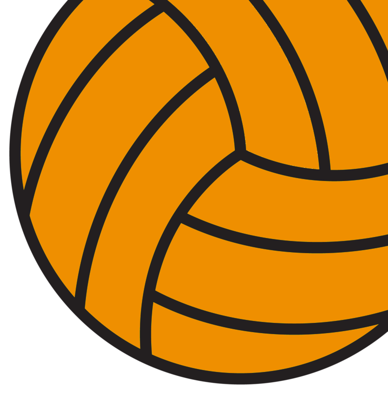
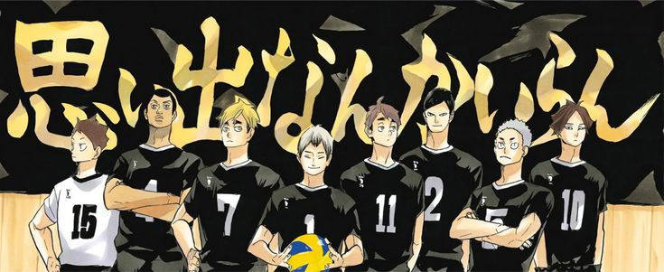
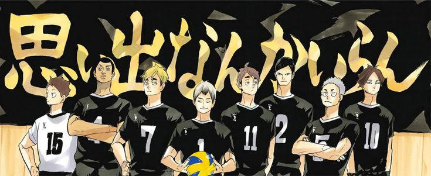
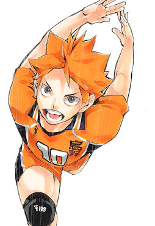

.png)
HAIKYU!!
Genre: Comedy, Slice Of Life, Drama
Themes: Shonen, Sport, School
Release Dates:2014, 2015, 2016, 2020

Genre: Comedy, Slice Of Life, Drama
Themes: Shonen, Sport, School
Release Dates:2014, 2015, 2016, 2020
The first season of Haikyu!!, the anime television series, was produced by Production I.G and was directed by Susumu Mitsunaka. The adaptation of the "Karasuno High Team Formation" (chapters 1–35) and "Interhigh" (chapters 36–71) story arcs from the original manga
The season was announced to be in production on December 19, 2014. Adapted the "Tokyo Expedition" (chapters 72–96) and the first half of "Spring High Preliminary" (chapters 97–149) story arcs from the original manga
The third season of Haikyu!! anime television series, titled Haikyū!! Karasuno High School vs Shiratorizawa Academy adapted the second half of the "Spring High Preliminary" story arc (chapters 150–207), with the exception of chapters 191–206

The fourth and final season of Haikyu!! anime television series, titled Haikyū!! To the Top adapted the first half of "Tokyo Nationals" (chapters 207–292) story arc from the original manga
(CLICK ONE)

.jpeg)
.jpeg)
.jpeg)
.jpeg) 

The school's Boys' Volleyball Club was founded many years ago and has often been associated with crows due to the school's name. Its banner, in fact, reads "Fly" which alludes to crows. It was said that Coach Ikkei Ukai had a ferocious pack of crows during Karasuno's glory days.
Due to the players' flexibility and solid receives and digs, the Boys' Volleyball Club team is nicknamed "The Cats" which is also an allusion to the school name. The club banner reads "Connect" which often refers to the connection of plays.
The Boys' Volleyball Club is considered a "powerhouse". According to Tanaka, the volleyball team has ranked among the top 8 in Japan for several years. Shiratorizawa had been undefeated and the Miyagi Prefecture representative at national tournaments for generations, only having lost to Karasuno recently
The Boys' Volleyball Team is ranked in the top four of the prefecture. For years, it had always been in the finals of the Interhigh and Spring High, only losing to Shiratorizawa. Most of the players are powerful enough to become aces of the team. Most also went to Kitagawa Daiichi Junior High and were invited to Aoba Johsai to join the volleyball team.
The boys' volleyball team is a long-time powerhouse that has attended Spring Tournament for three years consecutively and 31 times overall. They are the runners-up of the last Interhigh and the current 2nd seed. They defeated a nationally-ranked top 3 spiker Wakatsu Kiryū and his team Mujinazaka in the semifinals, before taking a set from eventual champions Itachiyama.
The boys' volleyball team is currently a top four team in Tokyo and the ace of the team, Bokuto, is one of the top five aces in the nation, just barely missing the top three. Additionally, the volleyball team has gone to Nationals each of the last three years, coinciding with the ace's attending years.
Shōyō Hinata (Japanese: 日向ひなた 翔陽しょうよう Hinata Shōyō) is the main protagonist of the Haikyū!! series by Haruichi Furudate. For the majority of the series, Hinata was a first-year student at Karasuno High . He was one of the middle blockers for the Boys' Volleyball Team.
Hinata has a cheerful and energetic personality. He is easily excited and can be quite loud, a trait second only to Nishinoya and Tanaka. For the most part, Hinata is very simpleminded which sometimes causes him to make rash decisions. However, he is also shown to be quite observant. He is capable of reading social cues and can be incredibly empathetic toward others' struggles.
